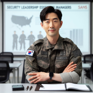

Unlock Your Leadership and Technical Potentialwith ASC Academy
ASC Academy is a hub of knowledge and skill development, offering cutting-edge contextualised leadership and technical courses. Catering to ASC organization and VOG holdings employees, we drive professional growth and nurture talent. ASC academy provides a dynamic learning environment that equips individuals with the tools for success. With a commitment to excellence, our courses are designed to elevate careers and enhance organizational performance.
Our Technical Instructors
Ms Joanne Wong
Ms Joanne Wong, an ASC Senior Instructor, has 25 years of industry experience managing and securing networks. She has authored numerous courses and is considered a leading expert in building an effective SOC. She currently works as an independent consultant in London, UK, focusing on effective computer network defense. Her work experience includes penetration testing, security operations, incident response, and forensic analysis.
Mr Jason Tay
Mr Jason Tay is a managing partner with Cyberx based out of Milan, Italy and a ASC Academy Senior Instructor. As a consultant, he has spent the past several years designing large enterprise security and infrastructure architectures, helping organizations to perform security assessments, and communicating enterprise risk to senior leadership teams.
Mr Leon Sean
Mr Leon Sean is a ASC Principal Instructor who has over 25 years of security experience in cyber threat research, security architecture, and security culture and training. He played a pivotal role in pioneering the fields of deception and cyber intelligence by creating honeynets and founding the Honeynet Project. Leon has authored three security books, provided consultation services in 20+ countries, and has helped over 350 organizations build security behavior and culture programs to manage their human risk.

Mr Fabian Kim
Mr Fabian Kim is a ASC Principal Instructor where he leads the Cybersecurity Leadership curricula to help shape and develop the next generation of security leaders. Fabian was the CISO-in-Residence at YLT Ventures where he supported cybersecurity entrepreneurs with ideation and market research, conducted due diligence for potential investments, and engaged in go-to-market activities of the firm's portfolio companies. Fbian continues to serve as an advisor to numerous security startups and authors and teaches courses on CISO leadership and strategic planning.
Mr Michael Orlando
Mr Michael Orlando is a ASC Certified Instructor and the Co-Founder and CEO of BMX Cyber. Prior to BMX, Michael built, assessed, and managed security teams at the Pentagon, the White House, the Department of Energy, and numerous Fortune 500 clients. Michael has presented on security operations and assessment at DefCon's Blue Team Village, the Institute for Applied Network Security (IANS) Forum, BSidesDC, and the RSA Conference and has been quoted in the New York Times, the Washington Post, Forbes, and many other publications.
Qualifications & experiences:
Master’s in Info Security, The SANS Technology Institute
GIAC GSE
CISSP
CISA
PMP
Qualifications & experiences:
MBA, University of Illinois
CISM
ISSMP